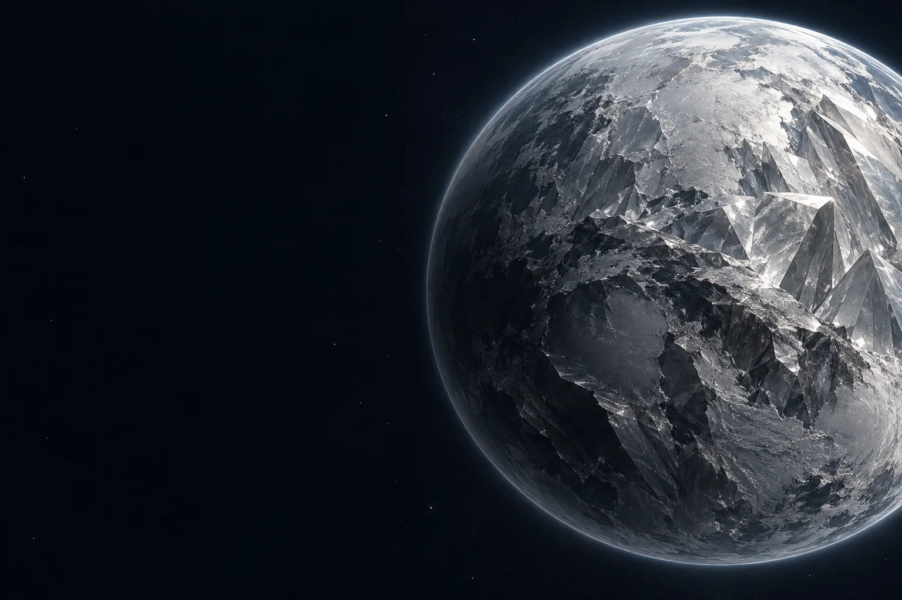

← Tous les projets
C++ · Programmation graphique
For-Shure Prototype
Un prototype de moteur de rendu pour travailler avec une API graphique bas niveau.
- C++
- DirectX 12
- Type
- Prototype technique
- Langage
- C++
- API graphique
- DirectX 12
- Domaine
- Rendu
01
Le projet
For-Shure est un prototype de moteur de rendu en C++/DirectX 12. Ce projet collectif m’a permis de travailler sur l’organisation d’un moteur graphique et l’intégration de ses composants.
02
Ma contribution
- Travail et intégration autour du système de fenêtre.
- Participation à l’architecture du moteur et à l’intégration des composants graphiques.
- Manipulation des composants de rendu : périphérique, commandes, matériaux et caméra.
03
Ce que j’en retiens
Comprendre les responsabilités explicites d’une API graphique bas niveau.
Intégrer des composants conçus en parallèle dans une architecture commune.
CONTACT
Me retrouver
Mes jeux et mon code.